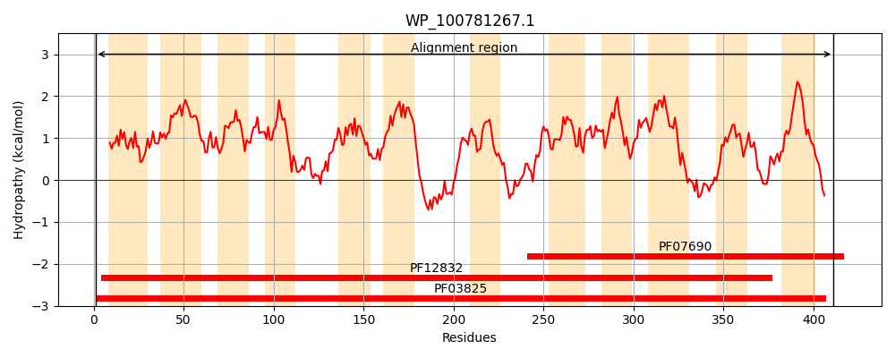
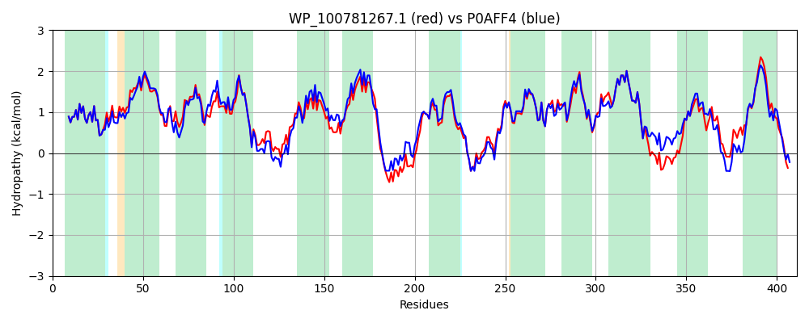

Hit Accession: P0AFF4
Hit TCID: 2.A.1.10.1
Hit Description: gnl|BL_ORD_ID|8822 gnl|TC-DB|P0AFF4|2.A.1.10.1 Nucleoside permease nupG - Escherichia coli.
Mach Len: 411
e:0.000000
Query TMS Count : 12
Hit TMS Count: 12
TMS-Overlap Score: 11.700000
Predicted Substrates:CHEBI:4053;cytidine, CHEBI:2472;adenosine, CHEBI:5564;guanosine, CHEBI:9579;thymidine, CHEBI:5927;inosine
BLAST Alignment:
Score: 1905 , Bit scores: 738 bits, E-value: 0.0e+00, Alignment length: 411, Percentage identity: 88
Query: 1 MNLKLQLKILSFLQFCLWGSWLTTLGSYMFVTLKFDGAAIGAVYSSLGIAAVLMPTLLGIVADKWISAKWVYAICHLVGALTLYLAAQVTTPGEMFLVILLNSLAYMPTLGLINTISYYRLQSAGLDIVTDFPPIRIWGTIGFILAMWGVSFSGFELSHMQLYIGATLSVLLALFTLTLPHIPVANAQRNQSWTEMLGLNAFALFKNKRMAIFFIFSMMLGAELQITNMFGNTFLHSFDKDPLFAGSFIVEHASVLMSISQISETLFILTIPFFLSRYGIKNVMLISIVAWMLRFGLFAFGDPTPFGTVLLVLSMIVYGCAFDFFNISGSVFVEKEVRPEIRASAQGMFLMMTNGFGCILGGMVSGKVVEHFTVEGITDWQSVWLIFAGYSLVLAFAFVALFKYKHVRQPT 411
MNLKLQLKILSFLQFCLWGSWLTTLGSYMFVTLKFDGA+IGAVYSSLGIAAV MP LLGIVADKW+SAKWVYAICH +GA+TL++AAQVTTP MFLVIL+NS AYMPTLGLINTISYYRLQ+AG+DIVTDFPPIRIWGTIGFI+AMW VS SGFELSHMQLYIGA LS +L LFTLTLPHIPVA Q NQSWT +LGL+AFALFKNKRMAIFFIFSM+LGAELQITNMFGNTFLHSFDKDP+FA SFIV+HAS++MSISQISETLFILTIPFFLSRYGIKNVM+ISIVAW+LRF LFA+GDPTPFGTVLLVLSMIVYGCAFDFFNISGSVFVEKEV P IRASAQGMFLMMTNGFGCILGG+VSGKVVE +T GITDWQ+VWLIFAGYS+VLAFAF+A+FKYKHVR PT
Sbjct: 1 MNLKLQLKILSFLQFCLWGSWLTTLGSYMFVTLKFDGASIGAVYSSLGIAAVFMPALLGIVADKWLSAKWVYAICHTIGAITLFMAAQVTTPEAMFLVILINSFAYMPTLGLINTISYYRLQNAGMDIVTDFPPIRIWGTIGFIMAMWVVSLSGFELSHMQLYIGAALSAILVLFTLTLPHIPVAKQQANQSWTTLLGLDAFALFKNKRMAIFFIFSMLLGAELQITNMFGNTFLHSFDKDPMFASSFIVQHASIIMSISQISETLFILTIPFFLSRYGIKNVMMISIVAWILRFALFAYGDPTPFGTVLLVLSMIVYGCAFDFFNISGSVFVEKEVSPAIRASAQGMFLMMTNGFGCILGGIVSGKVVEMYTQNGITDWQTVWLIFAGYSVVLAFAFMAMFKYKHVRVPT 411 | Protein Hydropathy Plots: |
|---|
|  |  |
Pairwise Alignment-Hydropathy Plot:
|
|---|
|  |